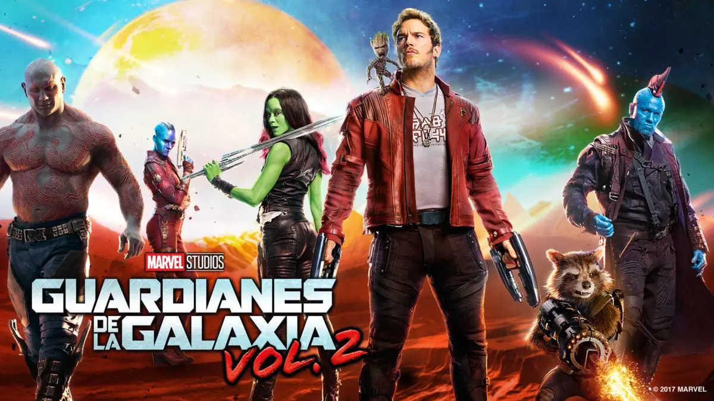
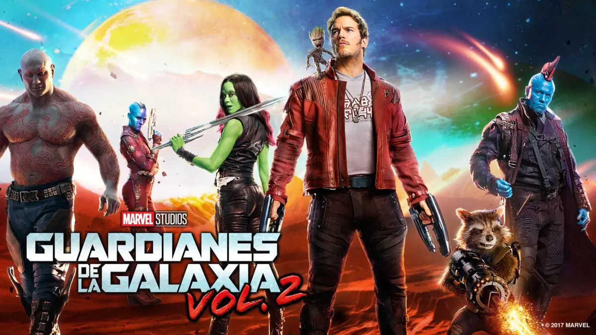
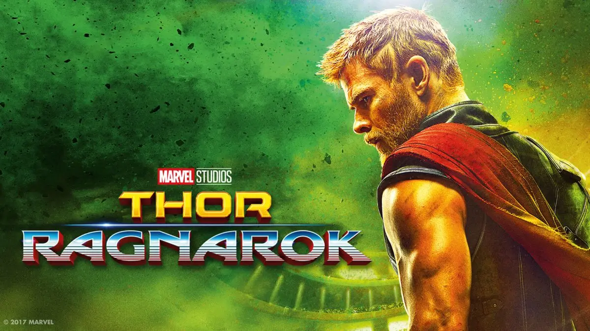
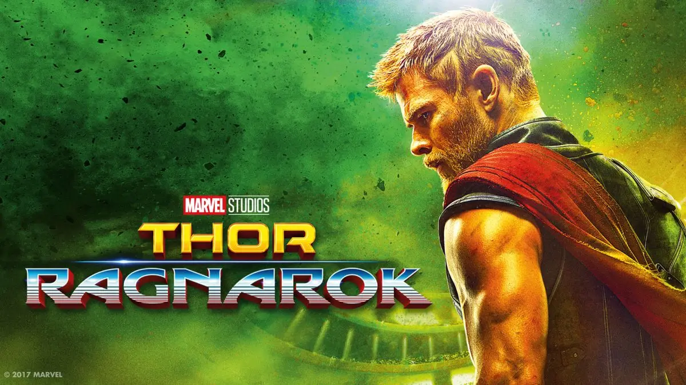
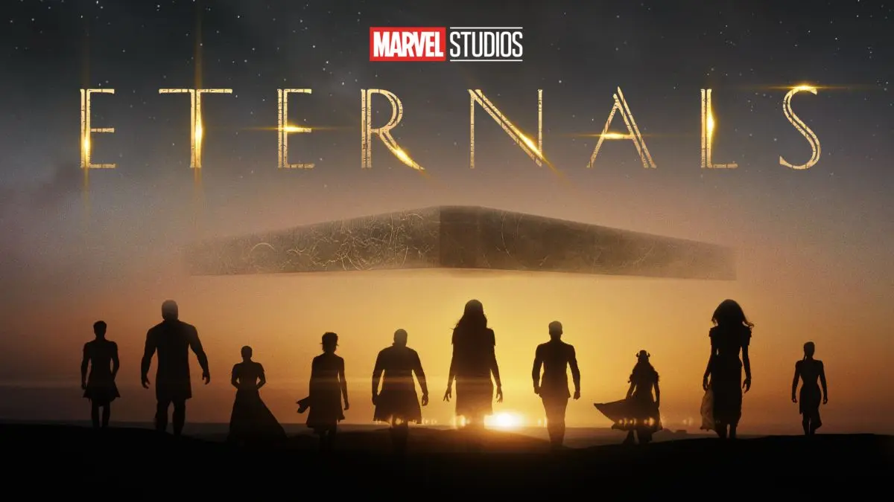
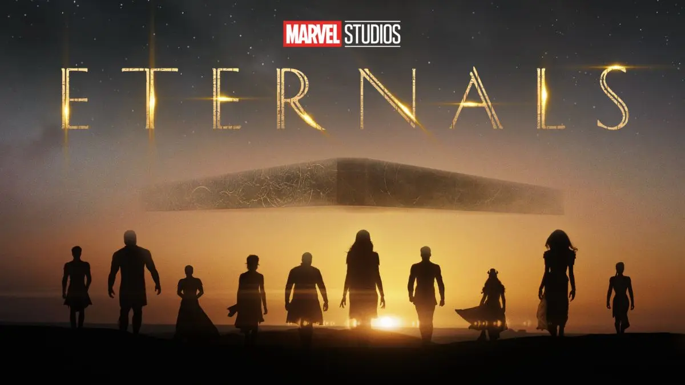

Capitán América / Chris Evans
El Capitán América es un superhéroe de los cómics de Marvel
creado en 1941. Su verdadero nombre es Steve Rogers, un
joven débil y enfermizo que se somete a un experimento
militar secreto que lo transforma en un súper soldado con
fuerza sobrehumana. Como Capitán América, lucha por la
justicia y la libertad en su país y en todo el mundo, con su
escudo indestructible como su principal arma.
El Capitán América es considerado uno de los personajes más
icónicos de Marvel y es admirado por su sentido del deber y
valentía. Ha enfrentado desafíos personales y ha luchado con
temas como la identidad, la lealtad y el sacrificio en su
búsqueda por hacer del mundo un lugar mejor.
Bruja Escarlata / Elizabeth Olsen
La Bruja Escarlata, también conocida como Wanda Maximoff, es
un personaje ficticio de Marvel Comics. Es uno de los
miembros fundadores de los Avengers y ha sido parte
importante del universo de Marvel por décadas. Wanda posee
la habilidad de manipular la realidad a través de su control
sobre la magia del caos, lo que la convierte en una de las
superheroínas más poderosas del universo Marvel.
La historia de Wanda se ha desarrollado a lo largo de varias
series de cómics y adaptaciones a la pantalla, incluyendo la
saga de los Avengers y su propia serie de televisión en
Disney+. A lo largo de su historia, Wanda ha luchado con
problemas de identidad, relaciones complicadas y su propia
inestabilidad emocional, lo que la convierte en un personaje
complejo y fascinante del universo Marvel.
Viuda Negra / Scarlett Johansson
La Viuda Negra, también conocida como Natasha Romanoff, es
un personaje ficticio de Marvel Comics. Es una espía y
asesina entrenada en la antigua Unión Soviética y ha sido
parte de los Avengers y otros equipos de superhéroes en el
universo Marvel. Natasha es conocida por su habilidad en
artes marciales, su destreza en el espionaje y su
experiencia en operaciones encubiertas.
La historia de la Viuda Negra se ha desarrollado a lo largo
de varias series de cómics y adaptaciones a la pantalla,
incluyendo las películas del Universo Cinematográfico de
Marvel. A lo largo de su historia, Natasha ha luchado contra
sus propios demonios internos y ha tenido que enfrentar su
pasado oscuro como espía rusa. A pesar de sus habilidades
letales, la Viuda Negra es un personaje complejo que ha sido
retratado con un enfoque en su humanidad y vulnerabilidad.
Capitana Marvel / Brie Larson
Capitana Marvel, también conocida como Carol Danvers, es un
personaje ficticio de Marvel Comics. Es una superheroína con
habilidades sobrehumanas, incluyendo la fuerza, velocidad,
resistencia, vuelo y la capacidad de absorber y manipular la
energía. Carol ha sido parte de los Avengers y otros equipos
de superhéroes en el universo Marvel.
La historia de la Capitana Marvel se ha desarrollado a lo
largo de varias series de cómics y adaptaciones a la
pantalla, incluyendo su propia película en el Universo
Cinematográfico de Marvel. Carol ha luchado contra villanos
poderosos y ha enfrentado problemas personales y emocionales
a lo largo de su historia, lo que la convierte en un
personaje complejo y multidimensional. Como Capitana Marvel,
es un símbolo de fortaleza, valentía y determinación, y ha
demostrado ser una líder efectiva en el campo de batalla.
Doctor Strange / Benedict Cumberbatch
Doctor Strange, también conocido como Stephen Strange, es un
personaje ficticio de Marvel Comics. Es un hechicero y
maestro de las artes místicas que protege la realidad de
amenazas sobrenaturales y dimensionales. Stephen es un
cirujano talentoso que pierde el uso de sus manos en un
accidente y busca una cura desesperada en Nepal. Allí, se
convierte en discípulo del Anciano, quien lo entrena en las
artes místicas para convertirse en el Hechicero Supremo.
La historia del Doctor Strange se ha desarrollado a lo largo
de varias series de cómics y adaptaciones a la pantalla,
incluyendo su propia película en el Universo Cinematográfico
de Marvel. Stephen ha enfrentado villanos poderosos,
incluyendo a Dormammu y a Baron Mordo, y ha defendido la
realidad de amenazas sobrenaturales. Como Hechicero Supremo,
es un personaje fascinante y misterioso que posee un
conocimiento profundo de los misterios del universo y los
poderes de la magia.
Iron Man / Robert Downey Jr.
Iron Man, también conocido como Tony Stark, es un personaje
ficticio de Marvel Comics. Es un multimillonario empresario,
inventor y filántropo que desarrolla una armadura
tecnológica para convertirse en un superhéroe. Tony es
conocido por su inteligencia, ingenio y habilidades como
ingeniero y mecánico, lo que le permite diseñar y construir
tecnología avanzada, incluyendo su propia armadura Iron Man.
La historia de Iron Man se ha desarrollado a lo largo de
varias series de cómics y adaptaciones a la pantalla,
incluyendo las películas del Universo Cinematográfico de
Marvel. Tony ha enfrentado amenazas poderosas, incluyendo a
su propio enemigo de la empresa, Obadiah Stane, y a villanos
sobrenaturales, como el Mandarin. A pesar de su arrogancia y
su reputación como playboy multimillonario, Tony es un
personaje complejo que ha enfrentado problemas personales y
emocionales.
Nebula / Karen Gillan
Nebula es un personaje ficticio de Marvel Comics y ha
aparecido en varias adaptaciones de cómics, incluyendo el
Universo Cinematográfico de Marvel. Es conocida por ser la
hija adoptiva del villano Thanos y por ser una luchadora
experta y estratega en combate.
En el Universo Cinematográfico de Marvel, Nebula es
interpretada por Karen Gillan y se presenta como una villana
en las películas Guardianes de la Galaxia (2014) y
Guardianes de la Galaxia Vol. 2 (2017). Sin embargo, en
Avengers: Infinity War (2018) y Avengers: Endgame (2019),
Nebula cambia de bando y se une a los Vengadores para luchar
contra su propio padre, Thanos. Nebula tiene una historia de
dolor y sufrimiento, ya que ha sido modificada
cibernéticamente por Thanos y ha sufrido abuso y
manipulación por parte de él. A pesar de esto, Nebula es un
personaje fuerte y decidido que utiliza su conocimiento del
universo y su habilidad en el combate para ayudar a salvar
al mundo.
Nick Fury / Samuel L. Jackson
Nick Fury es un personaje ficticio de Marvel Comics,
conocido por ser el director de la agencia de espionaje y
seguridad internacional S.H.I.E.L.D. Fury ha sido retratado
en varias adaptaciones de cómics, incluyendo la franquicia
cinematográfica del Universo Cinematográfico de Marvel,
donde ha sido interpretado por Samuel L. Jackson.
Nick Fury es el encargado de reunir a los Vengadores, un
grupo de superhéroes que se unen para proteger al mundo de
las amenazas extraterrestres y sobrenaturales. Fury es un
personaje astuto y bien conectado que siempre está un paso
adelante de sus enemigos. Además de liderar a S.H.I.E.L.D.,
Fury también ha sido fundamental en la creación y
mantenimiento de la Iniciativa de los Vengadores, un
programa diseñado para responder a amenazas globales. A lo
largo de las películas, Fury se enfrenta a desafíos
personales y profesionales, pero siempre encuentra una
manera de salir adelante.
Ant-Man / Paul Rudd
Ant-Man es un superhéroe de Marvel Comics que se caracteriza
por tener la capacidad de reducir su tamaño a la escala de
un insecto y aumentar su fuerza. El personaje fue creado por
Stan Lee, Larry Lieber y Jack Kirby, y su primera aparición
fue en 1962. Ant-Man ha sido interpretado en el cine por el
actor Paul Rudd, quien ha protagonizado dos películas de
Marvel: Ant-Man (2015) y Ant-Man and the Wasp (2018).
El personaje original de Ant-Man es el científico Hank Pym,
quien desarrolla un traje especial que le permite cambiar de
tamaño. En la película, el personaje de Paul Rudd es Scott
Lang, un ladrón que se convierte en el nuevo Ant-Man después
de ser reclutado por Pym. A pesar de su aparente falta de
poderes sobrenaturales, Ant-Man es un héroe valiente y
astuto que utiliza su habilidad única para luchar contra el
crimen y salvar al mundo.
Bucky Barners / Sebastian Stan
Bucky Barnes es un personaje de Marvel Comics que ha
aparecido en varias adaptaciones de cómics y en el Universo
Cinematográfico de Marvel. Es conocido por ser el mejor
amigo y compañero de batalla del Capitán América, y por su
transformación en el Soldado de Invierno, un asesino
controlado mentalmente por Hydra.
En las películas del Universo Cinematográfico de Marvel,
Bucky es presentado como un soldado que fue dado por muerto
en la Segunda Guerra Mundial, pero que en realidad fue
capturado por Hydra y sometido a experimentos que lo
transformaron en el Soldado de Invierno. Después de ser
liberado del control mental de Hydra, Bucky lucha junto al
Capitán América y los Vengadores para proteger al mundo del
mal. Aunque a menudo se siente culpable por sus acciones
pasadas, Bucky intenta redimirse y proteger a sus seres
queridos a toda costa.
Drax / Dave Bautista
Drax el Destructor es un personaje de Marvel Comics que ha
aparecido en varias adaptaciones de cómics y en el Universo
Cinematográfico de Marvel. Es miembro de los Guardianes de
la Galaxia y se caracteriza por ser un guerrero alienígena
impulsivo y directo.
En las películas del Universo Cinematográfico de Marvel,
Drax es presentado como un guerrero alienígena cuya familia
fue asesinada por el villano Ronan el Acusador. Se une a los
Guardianes de la Galaxia para ayudarlos en su lucha contra
Ronan y otros villanos intergalácticos. Aunque a menudo se
involucra en peleas, tiene un corazón de oro y está
dispuesto a hacer cualquier cosa por proteger a sus amigos.
Falcon / Anthony Mackie
Falcon es un personaje de Marvel Comics que ha aparecido en
varias adaptaciones de cómics y en el Universo
Cinematográfico de Marvel. Es conocido por ser el compañero
del Capitán América y por su capacidad para volar gracias a
un par de alas mecánicas.
En las películas del Universo Cinematográfico de Marvel,
Falcon es presentado como un exsoldado llamado Sam Wilson.
Se convierte en el aliado y amigo cercano del Capitán
América y se une a él en su lucha contra el terrorismo y la
injusticia. Con el tiempo, Sam hereda el manto del Capitán
América y se convierte en el primer Capitán América negro.
Falcon es un personaje valiente y leal que siempre está
dispuesto a arriesgar todo por lo que es correcto y por
proteger a sus seres queridos.

Gamora / Zoe Saldaña
Gamora es un personaje de Marvel Comics que ha aparecido en
varias adaptaciones de cómics y en el Universo
Cinematográfico de Marvel. Es conocida por ser una de las
hijas adoptivas del villano Thanos y por su papel como
miembro de los Guardianes de la Galaxia.
En las películas del Universo Cinematográfico de Marvel,
Gamora es presentada como una guerrera habilidosa y letal
que ha sido entrenada desde niña por Thanos. Sin embargo,
después de darse cuenta de la verdadera naturaleza de su
padre adoptivo, Gamora decide unirse a los Guardianes de la
Galaxia para luchar contra él y proteger el universo. A lo
largo de las películas, Gamora se enfrenta a varios desafíos
personales y emocionales, pero siempre se mantiene fiel a
sus principios y a sus amigos.
Groot y Rocket / Kevin Michael Richardson y Trevor Devall
Groot y Rocket son dos personajes de Marvel Comics que
forman parte de los Guardianes de la Galaxia y han aparecido
en varias adaptaciones de cómics y en el Universo
Cinematográfico de Marvel. Groot es un extraterrestre que
tiene la apariencia de un árbol y puede regenerarse a partir
de ramas. Es conocido por su limitado vocabulario, ya que
solo dice "Yo soy Groot". Por otro lado, Rocket es un
mapache genéticamente modificado con habilidades de
ingeniería y estrategia militar.
Groot y Rocket se presentan como amigos y compañeros
inseparables. Groot es el protector y guardián de Rocket, y
aunque su vocabulario es limitado, su conexión con Rocket y
los demás Guardianes es fuerte. Rocket, por otro lado, es un
personaje astuto y valiente que utiliza su ingeniería para
crear armas y dispositivos. Juntos, Groot y Rocket son una
fuerza formidable que ha salvado a la galaxia en varias
ocasiones.
Hawkeye / Jeremy Renner
Hawkeye es un personaje de Marvel Comics que ha aparecido en
varias adaptaciones de cómics y en el Universo
Cinematográfico de Marvel. Es conocido por su habilidad como
arquero y por su papel como miembro de los Vengadores.
En las películas del Universo Cinematográfico de Marvel,
Hawkeye es presentado como un agente de S.H.I.E.L.D. y un
arquero experto que lucha junto a los Vengadores para
proteger al mundo del mal. A lo largo de las películas, se
exploran su relación con su familia y su lucha para mantener
un equilibrio entre su vida como superhéroe y su vida
personal. Hawkeye es un personaje valiente y leal que
arriesga todo por proteger a sus seres queridos y al mundo
en el que vive.
Hulk / Mark Ruffalo
Hulk es un personaje de Marvel Comics que ha aparecido en
varias adaptaciones de cómics y en el Universo
Cinematográfico de Marvel. Es conocido por ser el alter ego
del científico Bruce Banner y por su increíble fuerza y
habilidades de regeneración.
En las películas del Universo Cinematográfico de Marvel,
Hulk es presentado como un ser poderoso que lucha junto a
los Vengadores para proteger al mundo de amenazas
extraterrestres y otros peligros. Sin embargo, también se
explora su lucha interna por controlar su ira y mantener su
forma humana. Hulk es un personaje complejo y a menudo
trágico, pero también es un héroe valiente que siempre está
dispuesto a ponerse en peligro para proteger a los demás.
Okoye / Danai Gurira
Okoye es un personaje de Marvel Comics que aparece en el
Universo Cinematográfico de Marvel. Es conocida por ser la
líder de la Dora Milaje, una fuerza de élite de mujeres
guerreras que protege al rey de Wakanda.
En las películas del Universo Cinematográfico de Marvel,
Okoye es presentada como una guerrera implacable y leal,
dispuesta a hacer cualquier cosa para proteger a su nación y
a su rey. Ella es una experta en artes marciales y en el uso
de armas, y ha demostrado ser una estratega astuta. Además
de su papel como líder de la Dora Milaje, Okoye también es
una aliada cercana de los Vengadores y ha luchado junto a
ellos para proteger al mundo.
Pantera Negra / Chadwick Boseman
Pantera Negra es un personaje de Marvel Comics que ha
aparecido en varias adaptaciones de cómics y en el Universo
Cinematográfico de Marvel. Es conocido por ser el rey de
Wakanda, una nación ficticia en África que es conocida por
su tecnología avanzada y su rica cultura.
En las películas del Universo Cinematográfico de Marvel,
Pantera Negra es presentado como un líder valiente y justo
que lucha por proteger a su pueblo y al mundo de amenazas
externas. Además de ser un guerrero formidable, Pantera
Negra también es un genio tecnológico y utiliza sus
habilidades para crear tecnologías avanzadas para su nación.
También es un miembro importante de los Vengadores y ha
luchado junto a ellos en varias misiones para proteger al
mundo. Pantera Negra es un personaje icónico que representa
la fuerza, la inteligencia y la determinación de un gran
líder.
Spider-Man / Tom Holland
Spider-Man es un personaje de Marvel Comics que ha aparecido
en varias adaptaciones de cómics y en el Universo
Cinematográfico de Marvel. Es conocido por su identidad
secreta como Peter Parker, un estudiante de secundaria que
adquiere habilidades arácnidas después de ser picado por una
araña radioactiva.
En las películas del Universo Cinematográfico de Marvel,
Spider-Man es presentado como un héroe joven y entusiasta
que lucha por hacer el bien y proteger a los inocentes. A
menudo se une a otros héroes del Universo Marvel, como los
Vengadores, y utiliza sus habilidades sobrehumanas para
combatir a villanos peligrosos como el Doctor Octopus, el
Duende Verde y el Lagarto. Spider-Man es un personaje
popular y amado por su inteligencia, sentido del humor y su
lucha constante contra el mal.
Thor / Chris Hemsworth
Thor es un personaje de Marvel Comics que ha aparecido en
varias adaptaciones de cómics y en el Universo
Cinematográfico de Marvel. Es conocido por ser el dios
nórdico del trueno y el hijo del rey Odin.
En las películas del Universo Cinematográfico de Marvel,
Thor es presentado como un héroe poderoso y valiente que
lucha por proteger a su hogar, Asgard, y al resto del
universo de amenazas externas. Además de su fuerza
sobrehumana y su habilidad para controlar el trueno, Thor
también es un personaje complejo que experimenta cambios
emocionales y evoluciona a lo largo de la saga. Se une a los
Vengadores y lucha junto a ellos en varias batallas épicas,
demostrando ser un aliado leal y un valiente guerrero en
defensa del universo.
Star-Lord / Chris Pratt
Star-Lord es un personaje de Marvel Comics y un miembro de
los Guardianes de la Galaxia. Su verdadero nombre es Peter
Quill, y fue secuestrado de la Tierra cuando era un niño y
criado por un grupo de alienígenas llamados los Saqueadores.
En las películas del Universo Cinematográfico de Marvel,
Star-Lord es presentado como un héroe excéntrico y un poco
imprudente, pero con un gran corazón. Es el líder de los
Guardianes de la Galaxia y utiliza su habilidad para pilotar
naves espaciales y su destreza en el combate para proteger
la galaxia de amenazas como Ronan el Acusador y Thanos.
Star-Lord también es conocido por su amor por la música de
los años 80 y su relación con Gamora, otro miembro de los
Guardianes de la Galaxia.
Mantis / Pom Klementieff
Mantis es un personaje de Marvel Comics y un miembro de los
Guardianes de la Galaxia. Es una alienígena de la raza Kree
y posee habilidades empáticas y telepáticas.
En las películas del Universo Cinematográfico de Marvel,
Mantis es presentada como un personaje amable y un poco
tímido que se une a los Guardianes de la Galaxia en su lucha
contra Thanos. Sus habilidades empáticas son esenciales para
ayudar a los héroes a derrotar a Thanos al final de la
película Avengers: Infinity War. Mantis también tiene una
relación cercana con Drax, otro miembro de los Guardianes de
la Galaxia, y su presencia ayuda a suavizar la imagen dura y
ruda de Drax.
Vision / Paul Bettany
Vision es un personaje de Marvel Comics que debutó en
Avengers #57 en 1968. Fue creado por Ultron, uno de los
enemigos principales de los Vengadores, y programado para
destruir a los héroes. Sin embargo, Vision se volvió contra
su creador y se convirtió en un héroe en su propio derecho.
En las películas del Universo Cinematográfico de Marvel,
Vision es interpretado por Paul Bettany y es presentado como
una inteligencia artificial creada por Tony Stark y Bruce
Banner. Es el compañero y amorío de la Bruja Escarlata, y
sus habilidades incluyen la capacidad de volar, la super
fuerza y la capacidad de disparar rayos láser. Vision se
convierte en un personaje clave en la trama de las películas
Avengers: Age of Ultron y Avengers: Infinity War, y su
destino es incierto al final de esta última película.
Wong / Benedict Wong
Wong es un personaje de Marvel Comics que apareció por
primera vez en Strange Tales #110 en 1963. Es el sirviente y
ayudante del Doctor Strange, un poderoso hechicero y
protector de la Tierra contra amenazas sobrenaturales.
En las películas del Universo Cinematográfico de Marvel,
Wong es interpretado por Benedict Wong y es presentado como
el bibliotecario y protector de los artefactos místicos del
Doctor Strange. También es un experto en artes marciales y
ayuda al Doctor Strange en sus misiones contra enemigos como
Kaecilius y Dormammu. Wong es un personaje secundario en las
películas Doctor Strange y Avengers: Infinity War, pero
tiene un papel más destacado en la secuela de Doctor
Strange, titulada Doctor Strange en el Multiverso de la
Locura.


 

 

 
